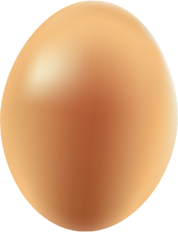

<!DOCTYPE html>
<html lang=zh-cn>
<head>
<title>重力感应球</title>
<meta charset="UTF-8">
<meta name="viewport" content="width=device-width, height=device-height,initial-scale=1.0, minimum-scale=1.0, maximum-scale=1.0,user-scalable=no, target-densityDpi=device-dpi">
<script type="text/javascript" charset="utf-8" src="foropera.js"></script>
<style type="text/css">
html,body{
	position: relative;
	}
	.bgimg{width: 320px;border: none;}
</style>
</head>
<body style="margin-top:0px;margin-left:0px;" onload="resetPage()">
<!--<canvas id="ball" style="margin-top:0px;margin-left:0px;z-index:10;"></canvas>
 -->


	 
	 <div style="width:200px;height:100px;position: absolute;left: 0;top: 0px;">
	    
	    	
	   
	 </div>
	 
	 <div id="test" style="font-size:12px;-webkit-text-size-adjust:none;"></div>
	 
	 
	 <script defer>
	            function Orientation(selector) {
	            
	            }
	            
	            Orientation.prototype.init = function(){
		            window.addEventListener('deviceorientation', this.orientationListener, false);
		            window.addEventListener('MozOrientation', this.orientationListener, false);
		            window.addEventListener('devicemotion', this.orientationListener, false);
	            }
	            
	            Orientation.prototype.orientationListener = function(evt) {
	              // For FF3.6+
	              if (!evt.gamma && !evt.beta) {
	              	// angle=radian*180.0/PI 在firefox中x和y是弧度值,
	                evt.gamma = (evt.x * (180 / Math.PI)); //转换成角度值,
	                evt.beta = (evt.y * (180 / Math.PI)); //转换成角度值
	                evt.alpha = (evt.z * (180 / Math.PI)); //转换成角度值
	              }
	             /* beta:  -180..180 (rotation around x axis) */
	             	/* gamma:  -90..90  (rotation around y axis) */
	             	/* alpha:    0..360 (rotation around z axis) (-180..180) */
	              
	              var gamma = evt.gamma;
	              var beta = evt.beta;
	              var alpha = evt.alpha;
	              
	              if(evt.accelerationIncludingGravity){
	               // window.removeEventListener('deviceorientation', this.orientationListener, false);
					gamma = event.accelerationIncludingGravity.x*10
					beta = -event.accelerationIncludingGravity.y*10
					alpha = event.accelerationIncludingGravity.z*10
	              }
			
				  
				  
	              if (this._lastGamma != gamma || this._lastBeta != beta) {
	              	 document.querySelector("#test").innerHTML = "x: "+ beta.toFixed(2) + " y: " + gamma.toFixed(2) + " z: " + (alpha != null?alpha.toFixed(2):0)
	              	
	                
	                  var style = document.querySelector("#pointer").style;
	                var  x=gamma/90 * 200 + 100;
	                var  y=beta/90 * 200 + 300;
	                  style.left = x +"px";
	                  style.top = y +"px";
	                  
	               if(beta.toFixed(2)<-14 && beta.toFixed(2)-15 && gamma.toFixed(2)>30 && gamma.toFixed(2) <31){location.href='page5.html';};
	                
	                this._lastGamma = gamma;
	                this._lastBeta = beta;
	              }
	             
	            };
	            (new Orientation()).init();
	          </script>

</body>
<script type="text/javascript" src="common.js"></script>
</html>